人证一致客户端使用指南
人证一致流程：
第一步：打开我们安装好的 人证一致App。
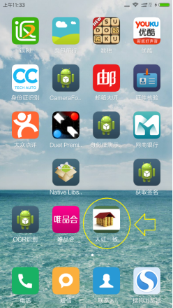
第二步：输入正确的账号密码，然后点击登录。
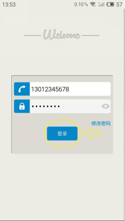
第三步：登录成功后，进入点击开始业务，开始人证一致业务。
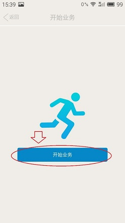
第四步：开始业务后，首先要进行条形码扫描。将条形码置于方框正中央，并保证条形码全部都处于方框内，即可完成扫描。如果遇到光线不好，或者条形不清晰、损坏等情况，可以选择手动输入条形码。
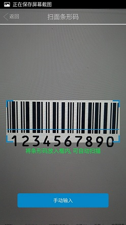
4.1一手房合同扫描位置如下：
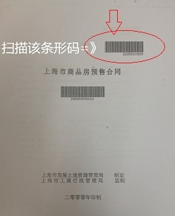
4.2二手房合同扫描位置如下：
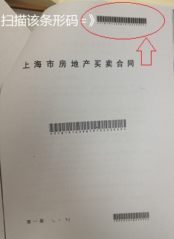
第五步：设置好条形码后，可以选择查看该条形码的“业务详情” 或直接进入“下一步”。
5.1如果选择“业务详情”,则可以看到该合同号的详细情况。
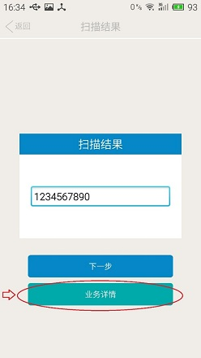
5.2 如果选择“下一步”，如果该合同号中的“暂存库”中并没有内容，则会直接跳转到“选择证件界面”，如果“暂存库”中有人，则会跳转到如下界面。
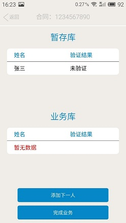
5.3 此时可以根据情况，选择“完成业务”或者 “添加下一人”。若选择“完成业务”，则会跳转到 “开始业务” 的界面，并将“暂存库”中的人，存入“业务库”当中。若选择 “添加下一人”，则会继续跳转到“选择证件界面”。
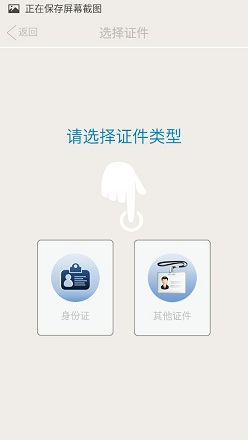
第六步：根据证件情况，选择证件类型后，进行拍摄证件照。
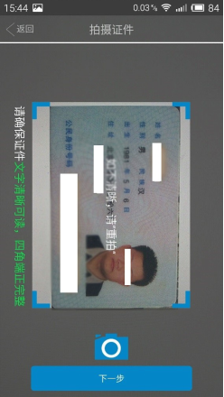
第七步：进入 “证件信息界面”，根据情况，填写和修改 “姓名”和“证件号”。完毕后，点击“下一步”。
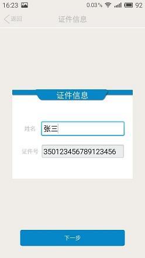
第八步：进入到“拍摄人脸界面” ，进行人脸拍照，并点击“下一步”。
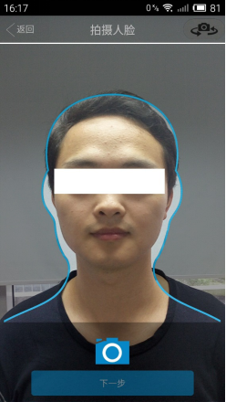
第九步：进入到“比对结果界面”，可以获取到比对结果，并将比对结果保存到“暂存库”中。比对结果如下：
9.1 “检测人脸失败”，表示上传的照片中找不到人脸，导致检测失败。
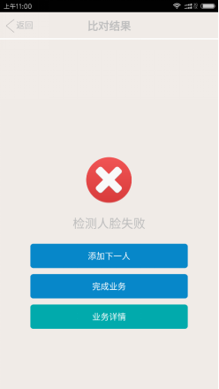
9.2 “系统判断为不同人”，表示人脸与证件照上的人脸并非同一人。
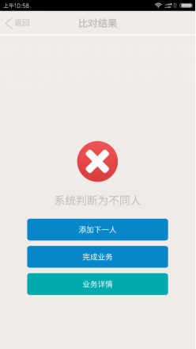
9.3 “检测到多张人脸”，表示拍摄人脸时，拍到了多张人脸，导致检测失效。
注：出现比对失败的情况，可选择返回，并重新拍摄人脸进行比对。
9.4 “比对通过”，表示拍摄的人脸与证件照上的人脸吻合，判定为同一人。
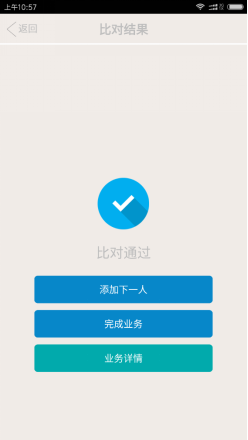
第十步：根据情况，选择“添加下一人”或“完成业务”，也可以查看该合同号的“业务详情”。
10.1如果选择“添加下一人”，则数据仍然会存于 “暂存库”，并继续添加下一人。
10.2如果选择“完成业务”，则数据会存入“业务库”，并跳转到“开始业务”界面。
10.3如果选择“业务详情”，则可以查看该合同号的详细情况。